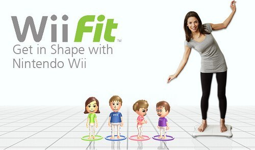
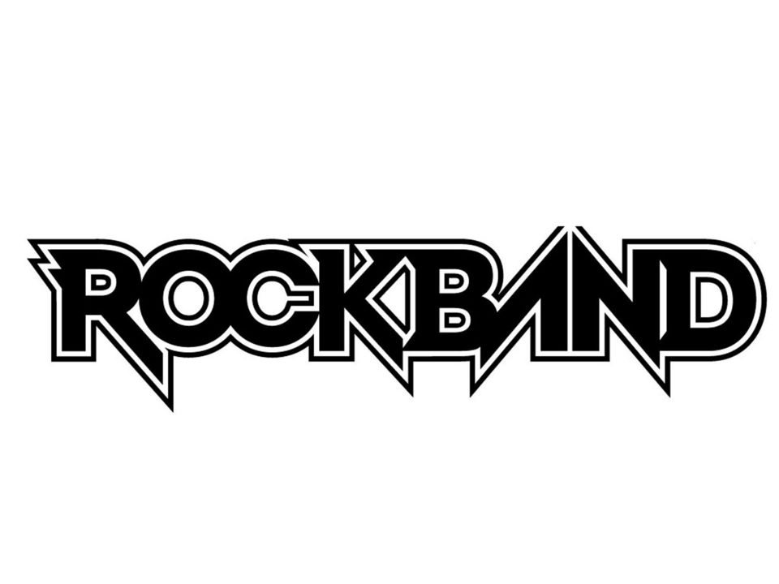
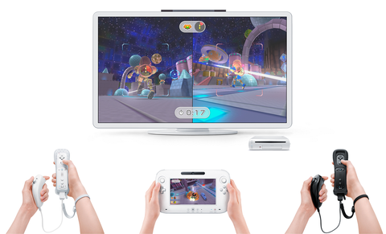
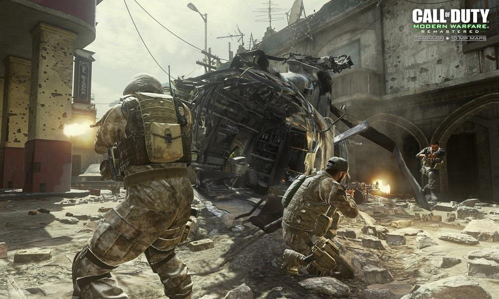

Guitar Hero III tiene casi todos los mismos componentes de juegos de Guitar Hero previos;
los jugadores todavía usan un mando de guitarra que permite al jugador tocar las notas
coloreadas que vienen en el diapasón en medio de la pantalla con la banda de fondo tocando
la canción.

Wii Fit
Es el primer juego que utiliza la Wii Balance Board, una báscula capaz de medir el
peso y el centro de gravedad del usuario. Además calculará la masa corporal teniendo en
cuenta la altura del usuario. Además de estos parámetros se realizarán unos test para
calcular nuestra “edad Wii Fit”.

Rock Band
Es una serie de videojuegos de música desarrollados por Harmonix Music Systems y MTV Games, y
distribuido por EA Distribution para las videoconsolas PlayStation 2, PlayStation 3, Wii y Xbox 360,
además de las videoconsolas portátiles PlayStation Portable y Nintendo DS. La serie, inspirada por
Harmonix (después de dejar de contribuir a la creación de nuevo juegos de Guitar Hero), permite que
hasta cuatro jugadores puedan jugar algunas de las canciones más populares de música Rock, jugando
con los instrumentos de la empresa (o también con los instrumentos de Guitar Hero).

Wii Play W/ Remote.
El juego consta de 9 minijuegos. Todos los juegos están diseñados para que puedan ser jugados por dos
jugadores pero puede ser perfectamente jugado por solo un jugador. Solamente se utiliza el wiimote
excepto en el minijuego de los tanques, si queremos sustituir el movimiento de los tanques mediante
la cruceta por un control analógico del nunchuck. Cuando se juega por primera vez solo hay un juego
disponible teniendo que completar unos mínimos (bastantes sencillos) para poder pasar al siguiente
juego.

Call of Duty
Modern Warfare 26 (conocido previamente como Modern Warfare 2, MW2 o Call of Duty 6)es
un videojuego de acción en primera persona (aunque hay algunos modos de juego en tercera persona)
desarrollado por Infinity Ward. Es la sexta entrega de la serie Call of Duty y sucesora directa de
Modern Warfare, cuarto de la serie.10 Salió a la venta el 10 de noviembre de 2009 y fue distribuida
por Activision. Con más de 20 millones de copias vendidas en total entre: Xbox 360, Playstation 3
y PC.